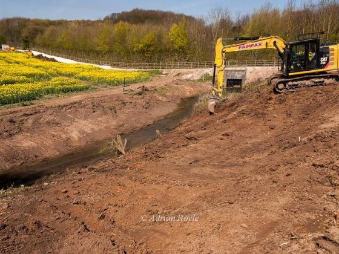
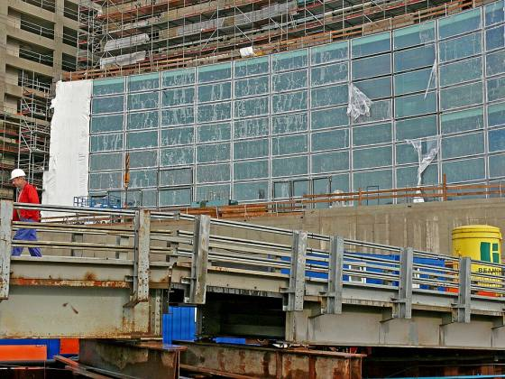
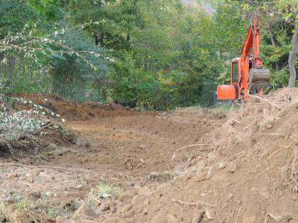
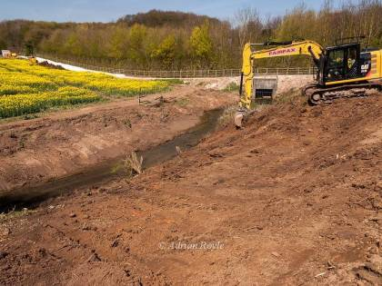
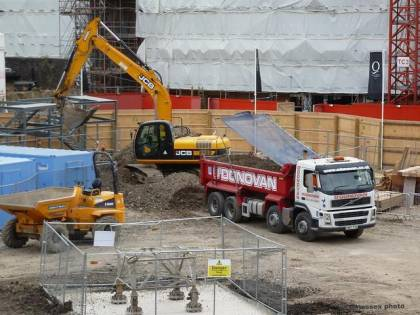
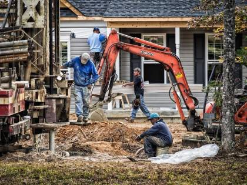

Colour — what the site is made of
- Brown → soil, mud, digging
- Grey → concrete, gravel, plaster
- Green → untouched vegetation
- Very dark → steel, rebar, shadow
- Yellow → machinery on site
HSV thresholds + morphological opening
Checking server…
Upload dated photos of a construction site. SiteScope measures each photo with classical computer vision, works out which stage the build has reached, and turns that into a progress curve and a completion date — showing every number it used.
No neural network. No black box. Every answer can be traced back to a named algorithm.
Estimated completion
29 Jul 2027
47.8% of the work is done · 52.2% still left
Real output from the six demo photos in demo/.
How it works
Each step hands a simple, readable result to the next one.
Sky is removed, then 18 OpenCV steps measure colour, edges, straight lines, rectangles, corners, texture and repeating patterns — ending in 15 numbers that describe the site.
Those 15 numbers are compared with 144 labelled reference photos. The 5 most similar ones vote on the phase: earthwork, foundation, structure or finishing.
The phase is a suggestion, never a fact. You accept it or change the stage and the percentage. Only confirmed photos count towards progress — and the model learns from them.
Stage weights turn confirmations into a percentage. Then Earned Schedule and a velocity trend extrapolate a finish date, a range and a confidence level.
What it measures
An empty plot and a finished facade differ in measurable ways. These are the ones SiteScope uses.
HSV thresholds + morphological opening
Canny + Hough transform + Sobel gradients
findContours + approxPolyDP + Harris / Shi-Tomasi
Local Binary Patterns + Fourier transform


Photos: Construction Site Safety dataset, Roboflow Universe (CC BY 4.0); facade photo by Fons Heijnsbroek, Wikimedia Commons (CC0).
The pipeline
Every photo takes the same five-stage path, and each stage hands a readable result to the next. Nothing is hidden — the app shows the numbers at every stage.
One dated photo from any camera or phone.
JPEG + dateSky removed, then 18 OpenCV steps read colour, edges, lines, shapes and texture.
15 numbersCompared with 144 labelled reference photos; the 5 nearest ones vote on the phase.
phase + positionYou accept the suggested stage or correct it. Only confirmed photos move the number.
% completeEarned Schedule and a velocity trend extrapolate the remaining work.
date + rangeEach box is a real stage in the code: pipeline.py → model.py →
stages.py → progress.py → prediction.py.
A worked example
These are the six demo photos that ship with the project. Each one was measured, given a stage, confirmed, and folded into the progress figure underneath it.




Progress now
47.8%
Estimated completion
29 Jul 2027
Against the plan
90 days late
Confidence
medium
On photo 6 the classifier guessed Finishing — formwork has the straight lines and rectangles of a facade. It was corrected to Structural frame 65%, which is exactly what the confirm step is for.
Accuracy, stated honestly
Measured by leave-one-out cross-validation on all 144 reference photos.
59.0%
exact phase correct
chance level is 25%
91.7%
within one phase
rarely badly wrong
medium
highest confidence allowed
never says “high”
At 59% exact accuracy the classifier is useful but not trustworthy on its own, so it never writes a percentage by itself. It proposes a stage; you confirm or correct it; only then does the number move. A photo of a less-advanced corner of the site can never pull the progress back down, and when the estimate rests on thin data the app says so instead of guessing.
A real failure case: a grey asphalt road reads as “concrete”, which the model associates with the structure phase — so road photos get misread. The demo folder includes these on purpose.
Six dated photos of one site are in demo/01_same_site_timeline/. Upload them in order and
watch the progress climb from 6% to 47.8% and the finish date settle.